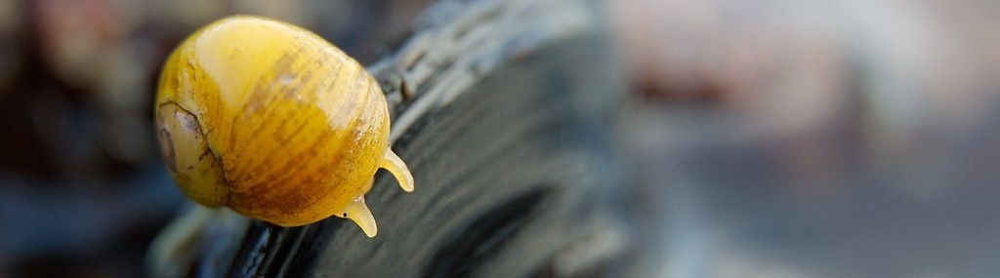
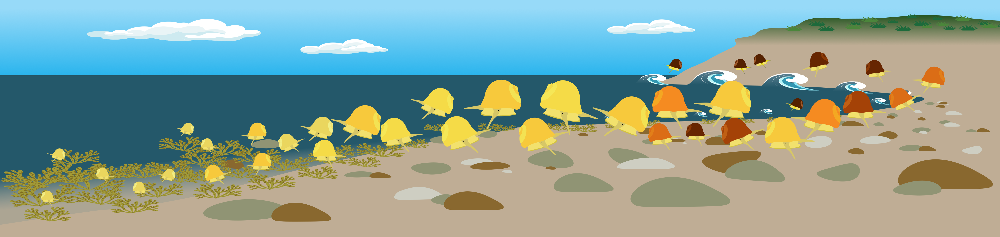

Pacobar Details

(Image credits: Kerstin Johannesson)
Parallel evolution and Coupling of reproductive Barriers in Littorina snails.
Speciation is the process during which barriers to reproduction appear and become associated between
groups of individuals until they become unable to reproduce. The environment can play an important role
in the speciation process when populations become adapted to specific environmental conditions and
develop barriers to gene flow (Nosil,
2012). To look at the genetic bases of
barriers involved in the speciation process, we can study populations that have evolved in parallel
along environmental gradients and that have evolved similar phenotypic traits, such as ecotypes (Johannesson et
al., 2025; Le
Moan et al., 2016), which suggest similar genetic bases.
In hybrid zones established along environmental gradients, it is known that the environmental gradient
also allows barriers to gene flow to become associated in a process called coupling (Butlin and Smadja,
2018). This coupling can also be facilitated by the genetic architecture of the barriers loci. In
particular, it is shown that Structural Variants (SVs) tend to facilitate the association of barriers
to gene flow as they reduce recombination between adjacent loci. The reduction of recombination allows
to conserve association between barrier loci located inside SVs, thus maintaining barriers to gene flow
associated. SVs can also form barriers to gene flow by forming genetic incompatibilies for example (Meyer et al.,
2024).
With associated barriers to gene flow and SVs forming potential barriers as well, it becomes complicated
to disentangle the genetic bases of the different barriers to gene flow involved in reproductive
isolation. To do this, it is possible to decompose reproductive isolation (Ribardière et
al., 2021; Karrenberg et
al., 2018) or to look at traits that are suspected to be under selection and try to identify
the genetic bases of these traits (Koch et
al., 2021).
To study this, we used Littorina fabalis, a gastropod that forms replicated hybrid zones
established along wave-exposure gradients across most North-European coasts. They are known for having
locally adapted ecotypes that differ in phenotypic traits such as size or colour. They are found on the
fucoid belt along the shore. From a study done on a Swedish hybrid zone, we learned that these ecotypes
show a strong genetic differentiation between ecotypes that are concentrated in 12 putative chromosomal
inversions that form sharp allelic clines along the wave exposure-gradient (Le Moan et al., 2024).

Here we compared the phenotypic and genetic composition of two hybrid zones, one from Sweden and one from France, both distributed over wave-exposure gradients. Our aim is to investigate whether similar genomic architectures (e.g., the same inversions) contribute to differentiation across parallel environmental gradients. Remarkably, we found that the shell size cline was reversed in France compared to Sweden, with small individuals occupying the more-sheltered end of the environmental gradient in Sweden but the more-exposed end in France. We also observed a cline in shell colour in France, whereas nearly all Swedish snails were yellow. Using whole-genome sequencing, we found similar levels of genetic differentiation between ecotypes in both places. Most of the differences were accounted for by the same 15 inversions, and the arrangement clines showed similar associations to the wave-exposure gradient in both hybrid zones. These inversions were enriched in SNPs differentiating the ecotypes that were either specific to one hybrid zone or showed reversed cline patterns between zones. Genome-wide association studies (GWAS) detected significant associations between genomic regions within inversions and shell size in Sweden, while one inversion was associated with colour in France. Our results show that the same inversions play a dual role: they support ecotype differences across similar environmental gradients in distant locations, while also contribute site-specific variation contributing to local adaptation.
Supervision:
Related publication:
- Pajot B., Broquet T., Choo L. Q., Barry P., Faria R., Butlin K. R., Johannesson K., Le Moan A. (in prep). Inversions support both parallel and location-specific adaptations in snail ecotypes. ##############TODO: add link and doi when published
- Reeve J., Ghane A., Barry P., Balmori de la Puente A., Butlin K. R., Choo L. Q., Le Moan A., Garcia Castillo D., Peris Tamayo A.-M., Kingston S., Leder E., Stankowski S., Pajot B., 2024. A Standard Pipeline for Processing Short-Read sequencing data from Littorina snails V.3. protocols.io. dx.doi.org/10.17504/protocols.io.dm6gp3m21vzp/v3
References:
- Butlin K. R., Smadja M. C. (2018). Coupling, Reinforcement, and Speciation. The American Naturalist. https://doi.org/10.1086/695136
- Johannesson K., Malmqvist G., Leder E., Stankowski S. (2025). Genomic insights into the origin of ecotypes. Trends in Ecology & Evolution.https://www.doi.org/10.1016/j.tree.2025.11.011
- Karrenberg S., Liu X., Hallander E., Favre A., Herforth-Rahmé J., Widmer A. (2018). Ecological divergence plays an important role in strong but complex reproductive isolation in campions (Silene). Evolution. https://doi.org/10.1111/evo.13652
- Koch L. E., Morales E. H., Larsson J., Westram M. A., Faria R., Lemmon R. A., Lemmon M. E., Johannesson K., Butlin K. R. (2021). Genetic variation for adaptive traits is associated with polymorphic inversions in Littorina saxatilis. Evolution Letters. https://doi.org/10.1002/evl3.227
- Le Moan A., Gagnaire P.-A., Bonhomme F. (2016). Parallel genetic divergence among coastal-marine ecotype pairs of European anchovy explained by differential introgression after secondary contact.Molecular Ecology. https://doi.org/10.1111/mec.13627
- Le Moan A., Stankowski S., Rafajlović M., Ortega Martinez O., Faria R., Butlin K. R., Johannesson K. (2024). Coupling of twelve putative chromosomal inversions maintains a strong barrier to gene flow between snail ecotypes. https://doi.org/10.1093/evlett/qrae014
- Meyer L., Barry P., Riquet F., Foote A., Der Sarkissian C., Cunha L. R., Arbio C., Cerqueira F., Desmarais E., Bordes A., Bierne N., Guinand B., Gagnaire P.-A. (2024). Molecular Ecology. Divergence and gene flow history at two large chromosomal inversions underlying ecotype differentiation in the long-snouted seahorse. https://doi.org/10.1111/mec.17277
- Nosil, P. (2012). Ecological Speciation. Oxford Series in Ecology and Evolution. https://doi.org/10.1093/acprof:osobl/9780199587100.001.0001
- Ribardière A., Pabion E., Coudret J., Daguin Thiébaut C., Houbin C., Loisel S., Henry S., Borquet T. (2021). Sexual isolation with and without ecological isolaiton in marine isopods Jaera albifrons and J. praehirsuta. Journal of Evolutionary Biology. https://doi.org/10.1111/jeb.13559